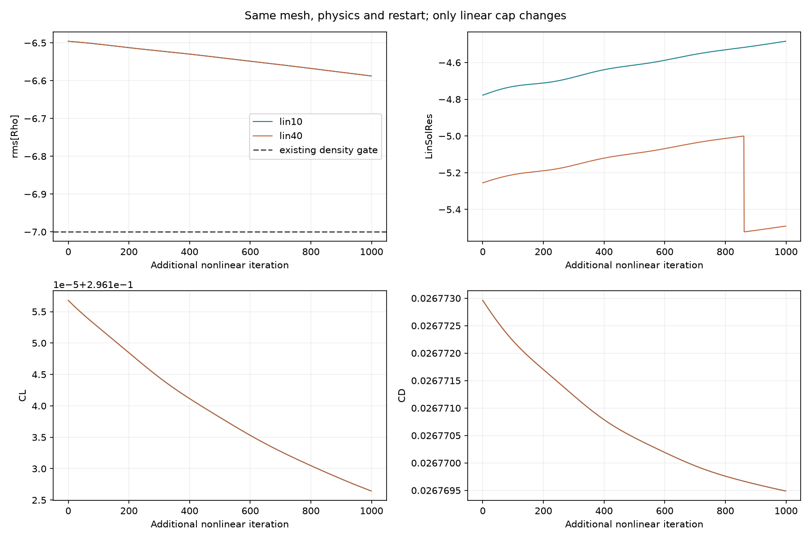
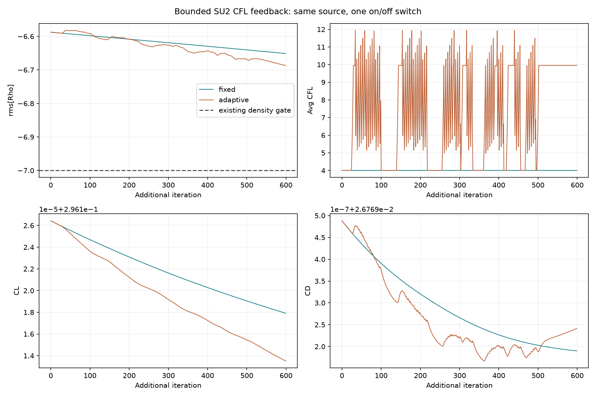
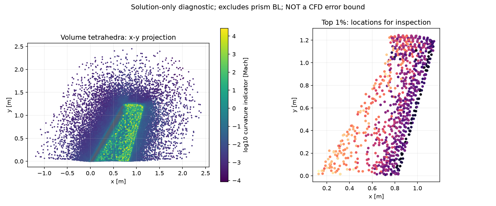
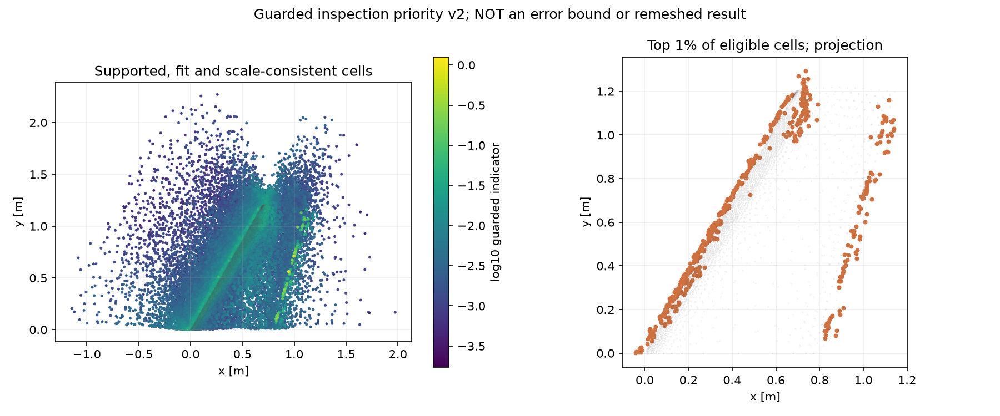

24–25 EKİM 2026 · GERÇEK NATIVE TESTLER
Kanıt odaklı yöntem geliştirme
Hipotezi kaydet → aynı başlangıçla ayırt et → faydasız dalı bırak → açık kapıyı koru.
Ne değişti?
Parametre kombinasyonlarını taramak yerine nedenleri sırayla ayıran bir denetçi eklendi. Dosya mührü veya alan/geçmiş eşlemesi bozuksa yorum durur. İteratif hata açıkken ağ farkı, saf ayrıklaştırma hatası diye sunulmaz. Denetçi önerisinin optimumluğu veya görülmemiş vakalarda başarı artışı henüz gösterilmedi.
Genel M6/RAE fizik kabulü hâlâ false. Yeni betikler, testler ve bir dar sayısal kapının geçmesi genel İHA CFD hizmetini veya uzman ajanı doğrulamaz.
Temsil ve kanıt→ İterasyon→ Bölgesel ağ→ Üç ağ / uzak alan→ Deney ve kapsam
Kontrollü deney sonucu
İlk çiftin geometri, fizik, başlangıç alanı ve config'i yalnız doğrusal iterasyon sınırında farklı. İki gerçek1000-adım koşusu: ek artık düşüşü -0.000000426 log10; önceden seçilen0,3 etki ölçütü geçmedi. İç doğrusal toleransın karşılanması tek başına dış akış yakınsamasını düzeltmedi. Daha fazla sınır değeri taranmadı.
| Koşu | Adım | Süre [s] | log10 artık | CL | CD | 271 Cp RMSE |
|---|
| Doğrusal sınır 10 | 1000 | 377.3 | -6.587591587 | 0.29612645 | 0.02676949 | 0.129060 |
| Doğrusal sınır 40 | 1000 | 410.8 | -6.587591161 | 0.29612645 | 0.02676949 | 0.129060 |
| Sabit CFL4 | 600 | 264.7 | -6.651164448 | 0.29611791 | 0.02676919 | 0.129061 |
| CFL geribesleme4–40 | 600 | 618.6 | -6.687008991 | 0.29611351 | 0.02676924 | 0.129063 |
Süreler tek sırayla yapılan gerçek ölçümlerdir; donanım hız kıyası veya istatistiksel güven aralığı değildir. Katsayılar aynı yarım kanat referans alanı/veterindedir. NASA dosyaları ONERA deneyidir; bütün271 nokta ve14 kesit/yüzey grubu korundu.

Bu sonuçtan sonra kaynaklı tek politika sınandı: sınırlı CFL geribeslemesi. Aynı yeni seed ile yalnız CFL_ADAPT açılıp kapatıldı. Sabit/geribeslemeli600 adımda ek yoğunluk-artık düşüşü 0.035845 log10. Geribeslemeli koşuda mevcut iterasyon ekranı: geçmedi. Bu ekran; deney, tüm sınır tabakası veya ağ bağımsızlığı kabulü değildir.

Bu çift için de önceden seçilen0,3 log10 etki ölçütü geçmedi. Deneme bütçesi uzatılmadı; yeni CFL değerleri taranmadı.
Ağda neresi incelenmeli?
Önceden seçilmiş lin10 hacim alanından Mach'ın yerel ikinci türevleri ve baskın değişim yönleri çıkarıldı. Kaynak yüze iki referans veterden yakın tetrahedral bölgede 88,407 hücre incelendi; 88,282 geçerli ve 125 geçersiz şablon ayrı tutuldu. Üst yüzde1 eşiğinde 883 hücre inceleme önceliği aldı. Bu seçim deneyin beklenen şok konumunu kullanmıyor.
Bu, NASA'nın tam Lp uyarlama zincirinin yeniden üretimi değildir. Prizma sınır tabakası kapsanmıyor, yeni mesh üretilmedi. Gösterge ve yönler inceleme içindir; adjoint ağırlıklı CL/CD hata bandı değildir. Şokta düzgün ikinci derece yaklaşımın sınırı ve şablon hata ölçüsü CSV'de saklanır.

Konum, yön, geçerlilik ve hata ölçüleri · Gerçek 3B alan ve gösterge
Konumsal göstergenin düzeltilen ikinci sürümü
İlk prototip bazı ince/çok ölçekli şablonlarda çok büyük değerler üretti; öncelik grubundaki en büyük gösterge 27521.7 oldu. Analitik test başarısı gerçek ağdaki bu kullanım sorununu önleyemedi. İlk sonuçlar silinmedi ve üretim kararı için kabul edilmedi.
İkinci sürüm aynı alanı yeniden işler: hücre köşeleri fit noktalarının konveks zarfında olmalı,40/80 komşulu fitler tutarlı olmalı ve koşul/fit hatası geçmelidir. 88,407 adaydan 53,068 hücre uygun, 35,339 hücre maskeli kaldı; maskeli bölgeler düşük hatalı veya güvenli sayılmıyor; 531 konum öncelikli. Yönün ayrıca kararlı bulunduğu öncelikli hücre sayısı 274. Bunlar hâlâ sezgisel inceleme kontrolleridir.

İkinci sürüm: maskeler ve iki ölçek · İkinci sürüm 3B alan
Yanlış kabulü önleyen kontroller
10 test grubu geçti. Değişmiş/eksik dosya, başka proje, bozuk zaman penceresi, NaN ve yuvarlamayla eşik atlama karşı örnekleri var. Kayıtlı geçti etiketi ham sonucun yerine kullanılamıyor. Analitik doğrusal/ikinci derece alan, dönmüş ince şablon, dejenere şablon ve m/mm dönüşümü de sınandı. Temel yazılım kontrolleri26/26 geçti.
| fixed / alan-geçmiş | eşlendi |
| fixed / artık ve kuvvet penceresi | geçmedi |
| adaptive / alan-geçmiş | eşlendi |
| adaptive / artık ve kuvvet penceresi | geçmedi |
| Tam bölgesel BL/iz/uç çözünürlüğü | açık |
| Üç sistematik ağ ve uzak alan | açık |
| Bütün deney kesitleri | geçmedi |
| Genel fizik yeterliliği | false |
Yeniden hesaplanan denetim · Mühür ve girdi bütünlüğü · Karşı örnek sonuçları
Kullanım ve sıradaki iş
Mühendislik Merkezi'nde NASA ONERA M6 CFD doğrulaması projesini seç. “Görevler ve çalışmalar” içindeki Kayıtlı sonuçların güvenilirliğini yeniden denetle seçeneği mühürleri ve ham geçmişi kontrol eder; CFD'yi tekrar çalıştırmaz. Yeni/başka projede kayıtlı sözleşme olmadan bu seçenek sonuç üretmez.
Sonraki öneri: Dış çözümdeki yavaşlamayı konuma ve denkleme göre ayır. Açık sayısal kapıyı ayırt eden sonraki test gereklidir; desteklenmeyen aynı ayarın yeni değerleri taranmaz. Tam yönlü yeniden ağ üretimi ve bölgesel duyarlılık hâlâ uygulanacak iştir; bu turda bitmiş sayılmaz.
Yöntem, kapsam ve yeniden üretim · İlk çiftin tüm ölçümleri · CFL çiftinin tüm ölçümleri
Araştırma kaynakları
Yedi birincil kaynak URL, indirme zamanı ve SHA256 ile saklandı. Kurulu native pakette ayrık adjoint için _AD çalıştırılabilir dosyası yok. NASA refine ve tam adjoint uyarlaması bu turda kurulmuş/test edilmiş sayılmadı. Kendi katkımız, kaynaklı sayısal araçları koşullu deney seçimi ve kanıt denetimiyle birleştiren açık politikadır.
- su2_v850_config.cfg — Tagged v8.5.0 config: linear controls, CFL feedback, verification and AD options.
- su2_linear_solvers.html — Linear accuracy must be balanced with nonlinear convergence and cost; central schemes may need more inner steps.
- su2_v850_CFlowCompOutput.cpp — LinSolRes is log10 of solver-reported relative linear residual; history RMS and volume residual have distinct semantics.
- su2_v850_CSysSolve.cpp — FGMRES relative residual beta/norm0 and iteration-cap mechanics.
- nasa_iterative.html — Monitor both equation residuals and engineering outputs.
- nasa_adaptation_M6_20200003084.pdf — Balan et al. 2020: Mach-Hessian anisotropic adaptation; this prototype is only an indicator, not a reproduction.
- refine_README.md — Production mesh adaptation dependencies and geometry requirements; not installed by this iteration.